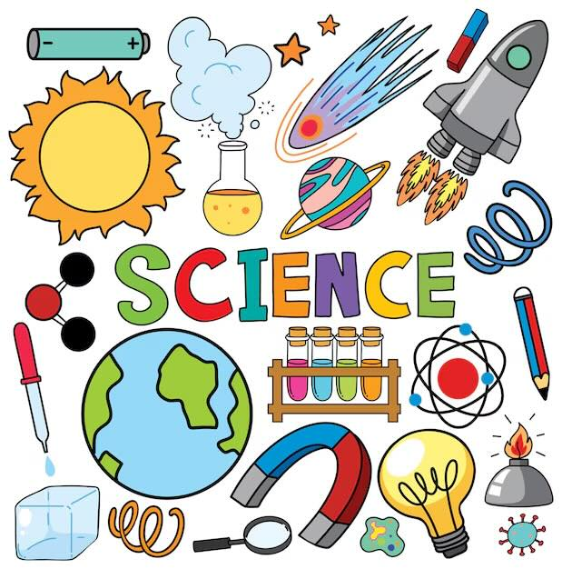
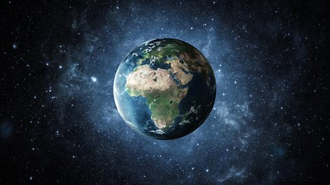
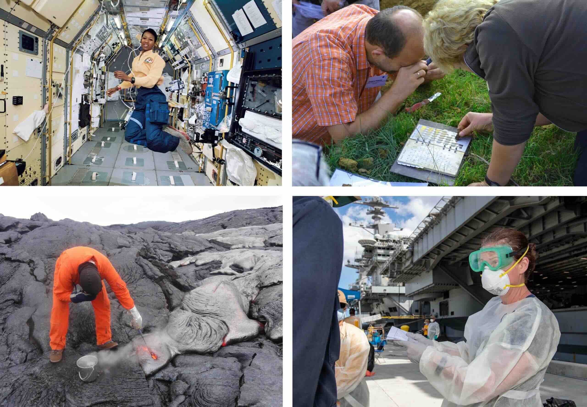
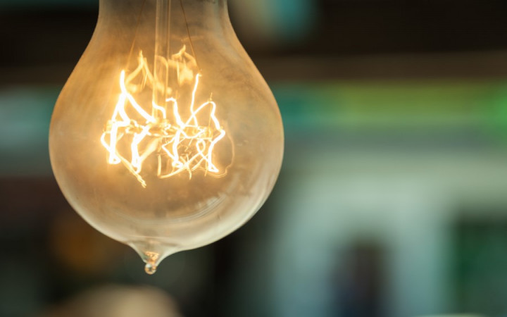

🔬 What is Science? 🔬

Science helps us understand and explore the world around us through many different activities and discoveries!
Science is the process of learning about the natural world through observation and experimentation. In science, evidence is the most important thing!
🌟 Understanding Science
Have you ever wondered how things work in the world around you? Why do birds fly? How do plants grow? What makes electricity work? Science helps us answer these questions!
Scientists study the natural world - from tiny insects to massive planets, from the food we eat to the air we breathe. They want to understand how everything works and connects together.
Key Point: Scientists are very organized and methodical. They don't randomly mix things together like you might see in movies. Real scientists follow careful steps to learn about our world.

Scientists study everything from our planet Earth to the vast universe around us
Real scientists work carefully and methodically in laboratories, following proper procedures to conduct their experiments safely and accurately
What Do Scientists Do?
Scientists ask meaningful questions that can be tested and analyzed. They use specific tools and methods to study the natural world. Most importantly, they make careful observations and record their findings so other scientists can repeat their investigations.

Science includes many different activities - from studying animals and plants to exploring chemistry and physics
🔍 The Eight Scientific Practices
When scientists "do science," they use these practices:
- Asking questions and defining problems - This is where science starts!
- Developing and using models
- Planning and carrying out investigations
- Analyzing and interpreting data
- Using mathematics and computational thinking
- Constructing explanations
- Engaging in argument from evidence
- Obtaining, evaluating, and communicating information
Scientists don't always do all of these steps, and they don't have to follow this exact order. It's more of a general approach to collect, analyze, and share information.
🧪 The Importance of Evidence
Remember: Evidence is #1 in science! The more evidence we have about an idea, the more confident we can be about it.
How Scientists Use Evidence
When scientists do investigations, they gather data to answer questions about the natural world. If they collect lots of data that supports their hypothesis (their educated guess), then the hypothesis might become a theory.
Theories continue to be tested. Sometimes they become well-established because there's lots of evidence to support them. But sometimes, theories are thrown out because new evidence shows they might not be true.
Important: Scientists must always be willing to examine new evidence and change their views. You must be willing to change your mind based on new evidence!
🌍 How Scientific Ideas Change: The Earth Example

Old Belief: For centuries, people believed the Earth was flat because that's what it looked like to them
New Evidence: Better tools and observations showed scientists that Earth is actually round!
🌍 Fun Fact: This example shows how important it is to be willing to change our ideas when we find new evidence! Scientists used better tools, made more careful observations, and discovered the truth about Earth's shape.
🔬 Controlled Experiments
Controlled Experiment: A scientific test where scientists only change one thing at a time to see what happens. This helps them know what caused the results.
Why Control Variables?
Imagine you're testing which type of soil helps plants grow best. You need to keep everything else the same:
What to keep the same (constant):
- Amount of water given to each plant
- Amount of sunlight each plant gets
- Size of the pots
- Type of seeds used
- Temperature where plants are kept
What to change (variable):
If you change more than one thing at a time, you won't know which change caused the results!
Recording Data
Why Record Data? Scientists record their observations and measurements so they can:
- Remember what happened in their experiments
- Share their findings with other scientists
- Compare results from different trials
- Look for patterns in their results
Repeating Tests
Scientists don't just do an experiment once. They repeat their tests multiple times to make sure their results are reliable. This is called doing multiple trials.
Example: If you're testing how far a paper airplane flies, you wouldn't throw it just once. You'd throw it many times and see what the average distance is. This gives you better, more trustworthy results!
🚀 When Things Don't Work: Learning from Failure
Sometimes experiments don't work the way scientists expect. That's okay! When scientists find problems or failure points in their designs, they use this information to make improvements.
What Scientists Do When Things Fail:
- Look at the data to understand what went wrong
- Identify which parts of their design need improvement
- Make changes to their design
- Test again to see if the changes work better
Testing Prototypes
A prototype is an early model of something that scientists or engineers build to test their ideas. When testing prototypes:
Example Scenarios:
- Testing a model boat: Change one thing at a time (like the sail size) while keeping everything else the same (water temperature, starting position, etc.)
- Testing a bridge design: Keep the materials and testing conditions the same each time to see which design holds the most weight
- Testing a solar oven: Measure temperature changes while keeping the amount of sunlight and food the same
❌ What is NOT Science?
Not Science: Anytime someone makes claims without evidence, they are not doing science.
Many things around us might seem like science, but they're not:
Examples of Non-Science:
- Palm reading - No evidence that palm lines predict the future
- Magic tricks - Based on illusion, not evidence
- Magic 8 balls - Random answers, not based on evidence
- Astrology - Claims that star positions affect human behavior, but no evidence supports this
Remember: Astronomy (the scientific study of space) is science, but astrology (predicting personality from star positions) is NOT science because there's no evidence to support it.

A Magic 8 Ball gives random answers, not answers based on evidence - this is NOT science!
🎯 Making Valid Scientific Claims
Valid Scientific Claim: A statement that is supported by evidence collected through proper scientific methods.
For a claim to be valid in science, it must:
- Be supported by evidence
- Be based on controlled experiments or careful observations
- Be repeatable by other scientists
- Be open to change if new evidence is found
🌍 Science is a Team Effort & Amazing Discoveries
Science is not done by just one person. Scientists work together and share their discoveries. For example, many scientists before and after Benjamin Franklin conducted experiments to better understand electricity. Each scientist built on the work of others.
Amazing Science Discoveries That Changed Our Lives

Electricity: Powers our lights, computers, and phones - imagine life without electricity!

Modern Agriculture: Helps feed people all around the world using better tools and methods
Medicine: Vaccines and medicines have saved countless lives and help people stay healthy
Science All Around Us: These discoveries show how science makes our lives better every day. From the moment you wake up and turn on a light, to the food you eat, to staying healthy - science is everywhere!
📝 Key Vocabulary
- Science: The process of learning about the natural world through observation and experimentation
- Evidence: Information collected during experiments that supports or disproves ideas
- Controlled Experiment: A test where only one variable is changed at a time
- Variable: Something that can be changed in an experiment
- Hypothesis: An educated guess about what will happen in an experiment
- Theory: An explanation supported by lots of evidence
- Data: Information collected during experiments
- Investigation: A careful study to answer scientific questions
🎯 Remember These Key Points
- Science starts with asking questions about the natural world
- Evidence is the most important part of science
- Scientists must be willing to change their ideas when new evidence is found
- Controlled experiments only change one variable at a time
- Scientists record data and repeat tests to get reliable results
- When designs fail, scientists use that information to make improvements
- Valid scientific claims must be supported by evidence
- Science is different from non-science because it requires evidence
🌟 You Can Be a Scientist Too!
Every time you ask "Why?" or "How?" about something in nature, and then try to find the answer through careful observation or testing, you're thinking like a scientist!